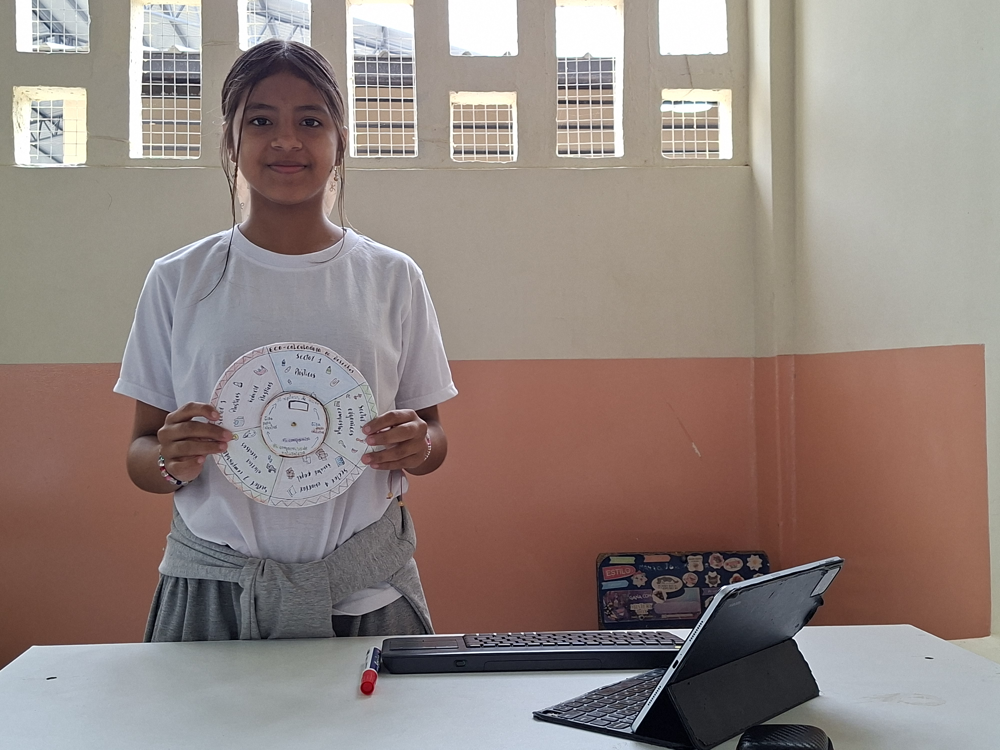
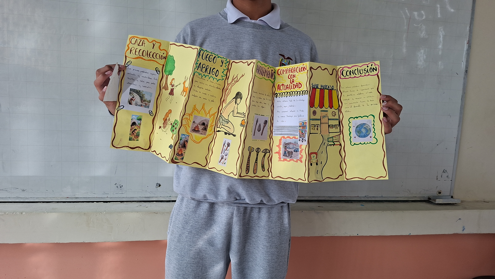
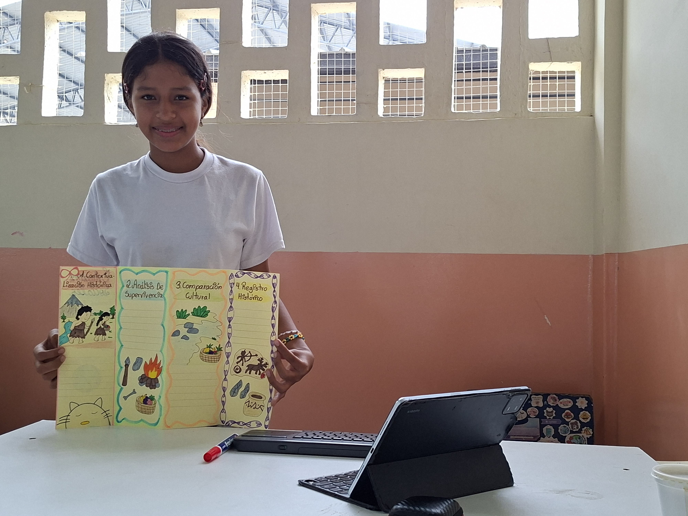
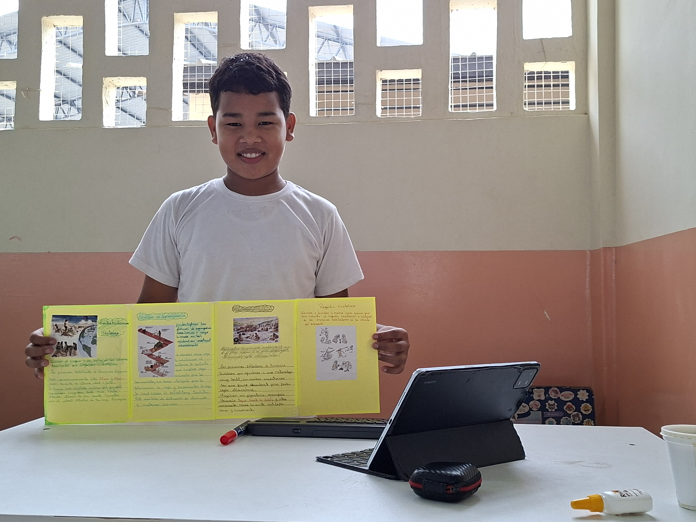

Fases del Proyecto
1. Contextualización histórica
Revisar el origen y las rutas de los primeros habitantes que llegaron a América.
2. Análisis de supervivencia
Identificar las formas de organización, recolección y caza basadas en las evidencias materiales descubiertas.
3. Comparación cultural
Contrastar de manera reflexiva el uso que ellos daban a la naturaleza frente al consumo de la sociedad actual.
4. Registro histórico
Dibujar o describir a mano una escena que ilustre el legado material y cultural de los primeros pobladores en la libreta del proyecto[cite: 1, 2].
Evidencias Históricas





